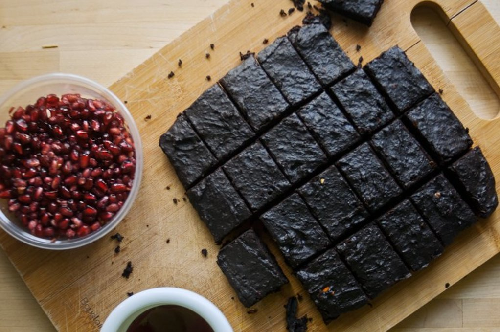

Brownie Cups

- Prep: 15 mins
- Cook: 25 mins
- Total 40 mins
- Servings: 24
- Yield: 24 servings
- Nutrition info
Preparación
- Precalentar el horno a 350 grados F (180 grados C). Engrasar ligeramente 24 moldes para muffins.
- Batir el cacao en polvo, 3/4 de taza de mantequilla, el aceite y 2 tazas de azúcar con una batidora
eléctrica en un cuenco grande hasta que esté suave. Añadir los huevos de uno en uno, dejando que cada
huevo se integre en la mezcla de mantequilla antes de añadir el siguiente. Añadir el extracto de
vainilla con el último huevo. Mezclar la mezcla de harina con la de huevos hasta que se incorpore.
Incorporar las nueces, mezclando lo suficiente para que se combinen de manera uniforme.
- Combinar las migas de galletas de animales, 1/3 de taza de azúcar y 6 cucharadas de mantequilla en un
bol; mezclar hasta que estén bien mezcladas. Presione la mezcla de galletas en el fondo de cada uno de
los moldes para muffins preparados. Vierta la mezcla de brownie en los moldes para muffins, llenando 3/4
partes.
- Hornee en el horno precalentado hasta que un palillo insertado en el centro salga limpio, de 25 a 35
minutos.